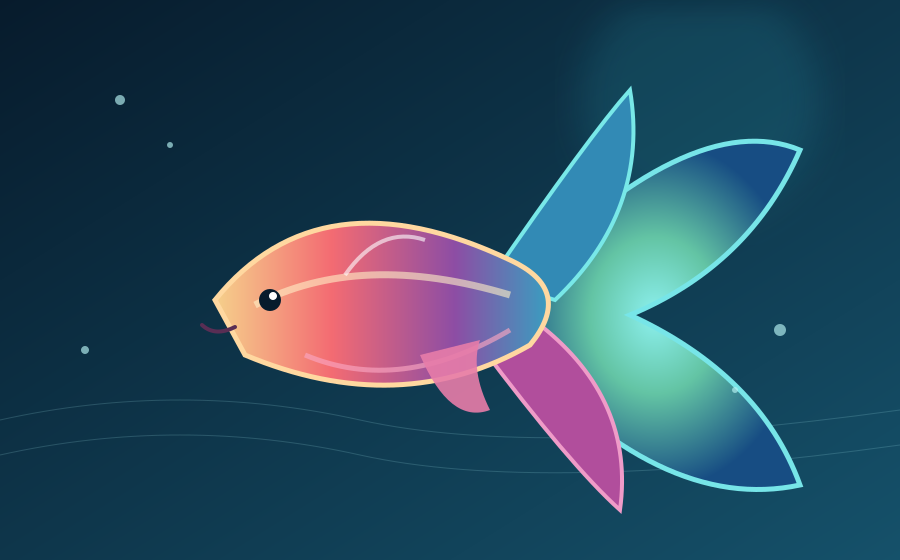

ให้อาหารในปริมาณที่ปลากินหมด ลดเศษอาหารที่อาจทำให้น้ำเสีย
BETTA CARE GUIDE
ดูแลปลากัดอย่างเข้าใจ
การเลี้ยงที่เหมาะสมเริ่มจากการเตรียมที่อยู่ น้ำสะอาด อาหารที่มีคุณภาพ และการสังเกตสุขภาพอย่างสม่ำเสมอ

Healthy Betta, Happy Life
พื้นฐานการเลี้ยงปลากัด
แม้ปลากัดจะสามารถขึ้นมาฮุบอากาศที่ผิวน้ำได้ แต่ก็ยังต้องการสภาพแวดล้อมที่สะอาดและเหมาะสมต่อสุขภาพ
ภาชนะเลี้ยง
เลือกภาชนะที่มีพื้นที่เพียงพอ มีฝาปิดที่อากาศถ่ายเท และจัดวางในบริเวณที่ปลอดภัย
คุณภาพน้ำ
ใช้น้ำที่ผ่านการเตรียมอย่างเหมาะสม หลีกเลี่ยงคลอรีน และดูแลความสะอาดอย่างสม่ำเสมอ
อาหาร
ให้อาหารสำหรับปลากัดในปริมาณพอดี เลือกอาหารที่มีคุณภาพและไม่ปล่อยเศษอาหารสะสม
สังเกตสุขภาพ
สังเกตการว่ายน้ำ ความอยากอาหาร สี และลักษณะครีบ หากผิดปกติควรหาสาเหตุและปรึกษาผู้มีความรู้
Daily Care
ข้อควรจำในการดูแล
รายละเอียดเล็ก ๆ ที่ช่วยให้ปลากัดมีสภาพแวดล้อมที่เหมาะสม
ดูแลคุณภาพน้ำและเปลี่ยนน้ำตามขนาดภาชนะ ระบบกรอง และสภาพน้ำจริง
ควบคุมสภาพแวดล้อมให้คงที่ และปรับสภาพปลาอย่างระมัดระวังเมื่อย้ายภาชนะ
เนื้อหานี้เป็นข้อมูลพื้นฐานเพื่อการศึกษา การดูแลจริงควรปรับตามสายพันธุ์ อายุ สุขภาพ และสภาพแวดล้อมของปลา